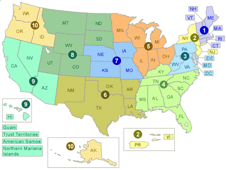

Corrective Action Programs around the Nation
EPA, states and territories work with facilities that treat, store, or dispose of hazardous wastes to investigate and clean up hazardous releases at their facilities in accordance with state and federal requirements. States and territories are authorized by EPA to lead Corrective Action Programs if EPA determines that a state’s program is equivalent to the federal program. EPA leads cleanups with federal cleanup orders or at the state’s request. Corrective actions are largely enforced through statutory authorities established by the Resource Conservation and Recovery Act (RCRA).
Click on the map below to find information about corrective actions in a region or state.

EPA Region 1: Connecticut, Massachusetts, Maine, New Hampshire, Rhode Island and Vermont
All EPA Region 1 states are currently authorized to implement their own Corrective Action Programs, with oversight and technical assistance from EPA. EPA is responsible for a number of corrective action sites, either through federal cleanup orders or at sites where a state has requested EPA's assistance.
As of the end of Fiscal Year 2015, EPA Region 1 had 296 facilities listed on the 2020 Corrective Action Baseline.
- Fact sheets for cleanup priority contaminated facilities
- Site maps, reports, and key documents from EPA's Cleanups in My Community online database
EPA Corrective Action Contact Information:
| State | Point of Contact | Phone Number |
|---|---|---|
| EPA Region 1 states |
Daniel Wainberg |
(617) 918-1283 |
| EPA Region 1 states | Beth Deabay RCRA Waste Management Section |
(617) 918-1343 |
| Connecticut | Edgar Davis | (617) 918-1379 |
| Maine and Vermont | Juan Perez | (617) 918-1354 |
| Massachusetts | Carolyn Casey | (617) 918-1368 |
| New Hampshire and Rhode Island |
Frank Battaglia | (617) 918-1362 |
EPA Region 2: New Jersey, New York, Puerto Rico and the United States Virgin Islands
In EPA Region 2, only New York is authorized to implement its own Corrective Action Program. As of the end of Fiscal Year 2015, EPA Region 2 had 332 facilities listed on the 2020 Corrective Action Baseline.
EPA Corrective Action Contact Information:
| Area | Point of Contact | Phone Number |
|---|---|---|
| New Jersey New York |
Benedetto Conetta | (212) 637-3030 |
| Puerto Rico | Ramon Torres | (787) 977-5807 |
| U.S. Virgin Islands | Carol Stein | (212) 637-4181 |
EPA Region 3: Delaware, Maryland, Pennsylvania, Virginia, West Virginia and the District of Columbia
In EPA Region 3, Delaware, Virginia and West Virginia are authorized to implement their own Corrective Action Programs, while EPA Region 3 implements the Corrective Action Programs for Maryland, Pennsylvania and the District of Columbia.
The EPA Region 3 Corrective Action Program created specific Web pages for corrective action facilities in each of its states. Information such as site descriptions, cleanup statuses, environmental indicator reports, institutional and engineering controls (ICs/ECs), the statement of basis, maps by area, environmental covenants and site reuse information can be found on these pages.
As of the end of Fiscal Year 2015, EPA Region 3 had 579 facilities listed on the 2020 Corrective Action Baseline.
EPA Corrective Action Contact Information:
| Area | Point of Contact | Phone Number |
|---|---|---|
| Pennsylvania | Paul Gotthold | (215) 814-3410 |
| District of Columbia Maryland Delaware Virginia West Virginia |
Luis Pizarro | (215) 814-3444 |
EPA Region 4: Alabama, Florida, Georgia, Kentucky, Mississippi, North Carolina, South Carolina and Tennessee
All of the states in EPA Region 4, with the exception of Mississippi are authorized to implement the Corrective Action Program. As of the end of Fiscal Year 2015, EPA Region 4 had 560 facilities listed on the 2020 Corrective Action Baseline.
EPA Corrective Action Contact Information:
| Point of Contact | Phone Number |
|---|---|
| Meredith Anderson, Chief of the RCRA Corrective Action Permitting Section |
(404) 562-8608 |
EPA Region 5: Illinois, Indiana, Michigan, Minnesota, Ohio and Wisconsin
All of the states in EPA Region 5 are authorized to implement Corrective Action Programs. As of the end of Fiscal Year 2015, EPA Region 5 had 864 sites listed on the 2020 Corrective Action Baseline.
EPA Corrective Action Contact Information:
| Point of Contact | Phone Number |
|---|---|
| Jose Cisneros, Branch Chief of the Remediation and Reuse Branch |
(312) 886-6945 |
| Michael Beedle Section Chief |
(312) 353-7922 |
| Tammy Moore, Section Chief |
(312) 886-6181 |
EPA Region 6: Arkansas, Louisiana, New Mexico, Oklahoma and Texas
All of the states in EPA Region 6 are authorized to implement Corrective Action Programs.
As of the end of Fiscal Year 2015, EPA Region 6 had 423 sites listed on the 2020 Corrective Action Baseline.
EPA Corrective Action Contact Information:
| Point of Contact | Phone Number |
|---|---|
| Laurie King | (214) 665-6771 |
| Richard Ehrhart | (214) 665-6765 |
EPA Region 7: Iowa, Kansas, Missouri and Nebraska
Kansas and Missouri are authorized to implement Corrective Action Programs. EPA is responsible for the Corrective Action programs in Iowa and Nebraska.
As of the end of Fiscal year 2015, EPA Region 7 had 204 facilities listed on the 2020 Corrective Action Baseline.
Information about corrective action sites in EPA Region 7 is also available by state:
EPA Corrective Action Contact Information:
| Point of Contact | Phone Number |
|---|---|
| Don Lininger Branch Chief of the Waste Remediation and Permitting Branch |
(913) 551-7724 |
EPA Region 8: Colorado, Montana, North Dakota, South Dakota, Utah and Wyoming
All EPA Region 8 states are authorized to implement Corrective Action Programs.
As of the end of Fiscal Year 2015, EPA Region 8 had 97 Facilities listed on the 2020 Corrective Action Baseline.
EPA Corrective Action Contact Information:
| Point of Contact | Phone Number |
|---|---|
| Michael Roach, P.E. Resource Conservation and Recovery Program |
(303) 312-6369 |
| Nancy Morlock Resource Conservation and Recovery Program |
(303) 312-6421 |
EPA Region 9: Arizona, California, Hawaii, Nevada, Guam and American Samoa
California, Nevada, Arizona, Hawaii and Guam are authorized to implement Corrective Action Program.
As of the end of Fiscal Year 2015, EPA Region 9 had 333 sites listed on the 2020 Corrective Action Baseline.
EPA Corrective Action Contact Information:
| Point of Contact | Phone Number |
|---|---|
| Steve Armann | (415) 972-3352 |
EPA Region 10: Alaska, Idaho, Oregon and Washington
Idaho, Oregon and Washington are authorized to implement Corrective Action Programs. EPA implements the Corrective Action Program in Alaska and Indian Country.
As of the end of Fiscal Year 2015, EPA Region 10 had 91 sites listed on the 2020 Corrective Action Baseline. Information about corrective action sites in EPA Region 10 is available by state:
- Corrective Action Sites in Alaska
- Corrective Action Sites in Idaho
- Corrective Action Sites in Oregon
- Corrective Action Sites in Washington
EPA Corrective Action Contact Information:
| Point of Contact | Phone Number |
|---|---|
| Barbara McCullough | (206) 553-2416 |